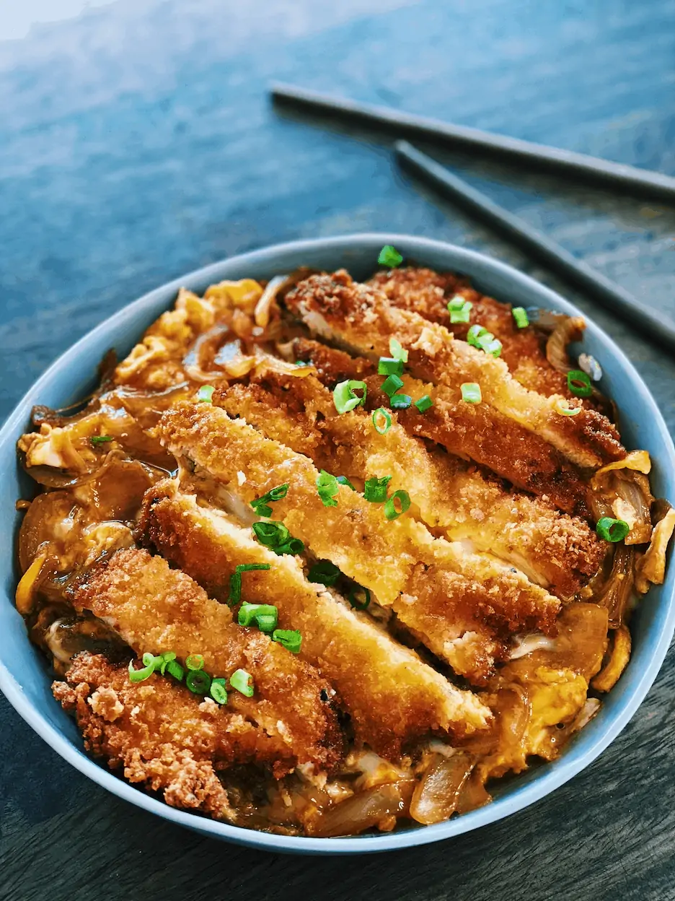

Chicken Katsu Don
Description
Chicken Katsu Don is a mouthwatering Japanese dish that combines crispy fried chicken cutlets with a savory-sweet sauce, all served over a bed of steaming rice. It's a delightful harmony of textures and flavors, sure to tantalize your taste buds with each bite.
Ingredients
- 2 boneless, skinless chicken breasts
- Salt and pepper to taste
- 1/2 cup all-purpose flour
- 2 eggs, beaten
- 1 cup panko breadcrumbs
- Vegetable oil for frying
- 1 onion, thinly sliced
- 1/2 cup chicken broth
- 2 tablespoons soy sauce
- 2 tablespoons mirin (Japanese sweet rice wine)
- 1 tablespoon sugar
- 2 cups cooked Japanese short-grain rice
- 2 green onions, thinly sliced (for garnish)
- Optional: Furikake (Japanese seasoning) for added flavor
Instructions
- Begin by preparing the chicken breasts. Place them between two sheets of plastic wrap and gently pound them with a meat mallet or the bottom of a heavy pan until they are about 1/2 inch thick. Season both sides with salt and pepper.
- Set up a breading station with three shallow bowls. Place the flour in one bowl, the beaten eggs in another, and the panko breadcrumbs in the third.
- Dredge each chicken breast in the flour, shaking off any excess. Then dip them into the beaten eggs, allowing any excess to drip off. Finally, coat the chicken breasts thoroughly with the panko breadcrumbs, pressing gently to adhere.
- Heat vegetable oil in a large skillet over medium-high heat. Fry the breaded chicken breasts until golden brown and cooked through, about 4-5 minutes per side. Transfer them to a paper towel-lined plate to drain excess oil.
- In the same skillet, add sliced onions and cook until softened, about 3-4 minutes. Then, pour in chicken broth, soy sauce, mirin, and sugar. Bring the mixture to a simmer and let it cook for another 2-3 minutes until slightly thickened.
- Slice the fried chicken breasts into strips and add them back to the skillet, coating them evenly with the sauce.
- To serve, divide the cooked rice among serving bowls. Top each bowl with the chicken katsu and sauce mixture. Garnish with sliced green onions and furikake, if desired.
- Enjoy your Chicken Katsu Don hot, savoring the delightful combination of crispy chicken, savory sauce, and fluffy rice.